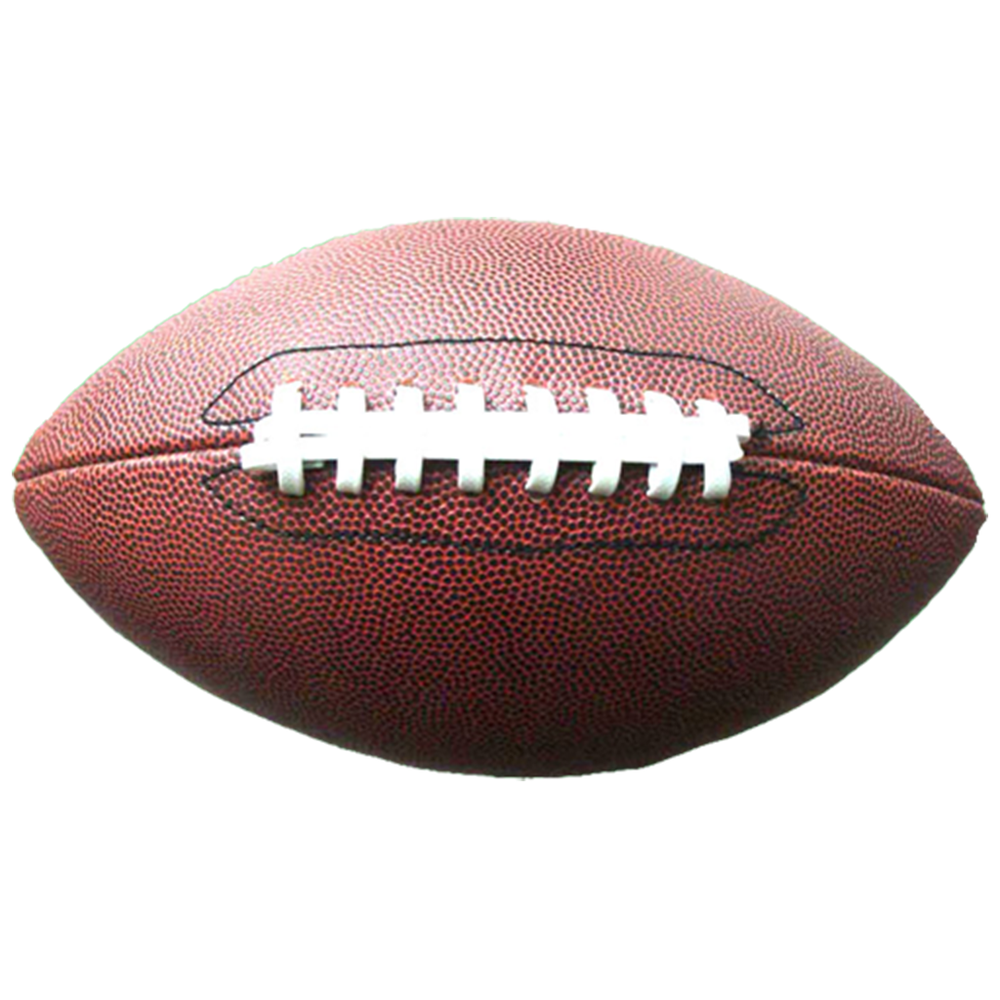

Every fall in America football comes back to give Amercians something fun to watch, it's something that bring tons of emotions to fans. Fall football fans could be fans of high school, college, or the NFL. It doesn't matter how you watch but the fans all love the game none the less and come to the game with sprit. Below are the NCAA Top 25 and their scores of the weekend aswell as the reults from Sunday night NFL Football.

NCAA Top 25
(25)Iowa 41 - Western Michigan 10
(24)UCLA 59 - NC Centeral 7
(23)Washington State 64 - North Colorado 21
(22)Miami 48 - Becook 7
(21)Duke 38 - Northwestern 14
(20)UNC 31 - Minnesota 13
(19)Oklahoma 66 - Tulsa 17
(18)Colorado 43 - Colorado State 35
(17)Ole Miss 48 - Georgia tech 23
(16)Oregon State 26 - San Diego State 9
(15)Kansas State 27 - Mizzouri 30
(14)LSU 41 - Mississippi State 14
(13)Oregon 55 - Hawaii 10
(12)Utah 31 - Web State 7
(11)Tennesse 16 - Florida 29
(10)Alabama 17 - USF 3
(9)Notre Dame 41 - Centeral Michigan 17
(8)Washington 41 - Michigan State 7
(7)Penn State 30 - Illinois 13
(6)Ohio State 63 - Western Kentucky 10
(4)Texas 31 - Wyoming 10
(3) Florida State 31 - Boston College 29
(2)Michigan 31 - Bowling Green 6
(1)UGA 24 - South Carolina 14